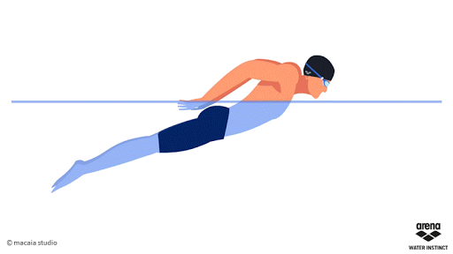

Estilo Mariposa
El estilo de mariposa requiere una correcta coordinación entre los brazos y las piernas, pero también es preciso conocer su técnica para una correcta ejecución. Además, precisa de un grado de fuerza algo mayor que el resto de estilos. La realización de la mariposa emplea un batido o patada de delfín con las piernas simultáneamente hacia abajo y hacia arriba, es decir, con las dos piernas juntas y a la vez, siendo la acción hacia abajo la que proporciona la propulsión. La acción de brazos se realiza igualmente de forma simultánea. Por cada acción de brazos o brazada se realizan dos patadas: La primera patada hacia abajo se realiza cuando las manos salen del agua (facilita la salida de la cabeza y la recuperación de brazos) y la segunda patada hacia abajo se produce cuando las manos entran en el agua (para no perder velocidad). En este punto existen diferencias de opinión por parte de algunos autores, ya que unos afirman que la intensidad o esfuerzo de las dos patadas es exactamente igual, y que son las diferencias posturales del cuerpo la causa de que el primer golpe parezca más potente que el segundo. Por otro lado, están los que piensan que la primera patada es más fuerte que la segunda.